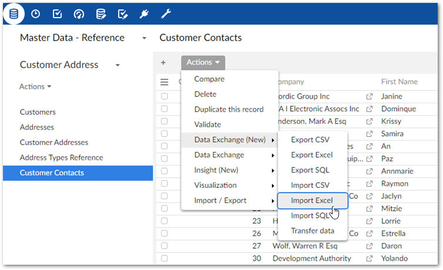
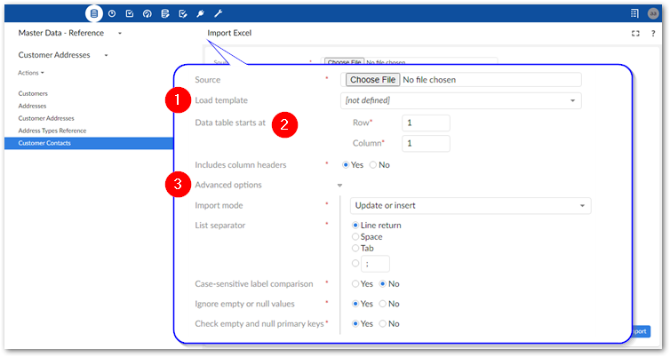
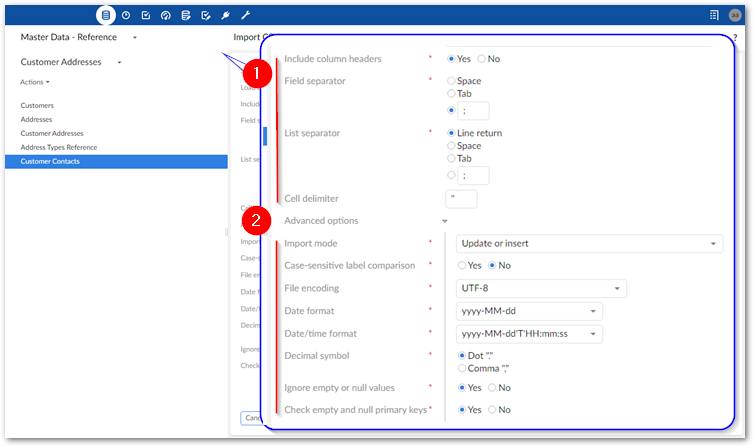
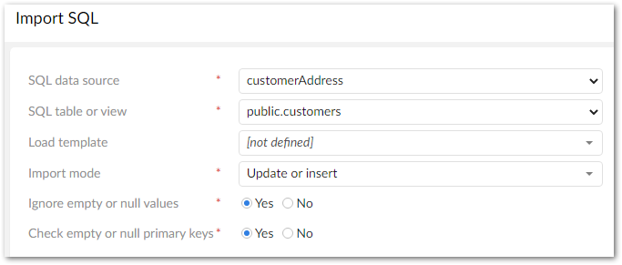
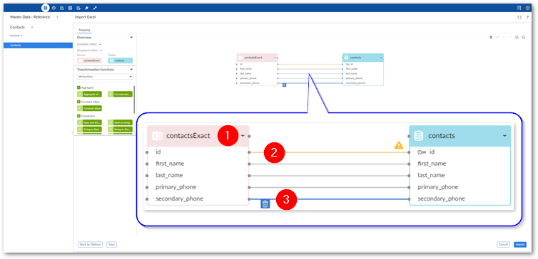
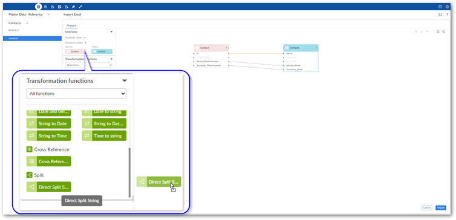
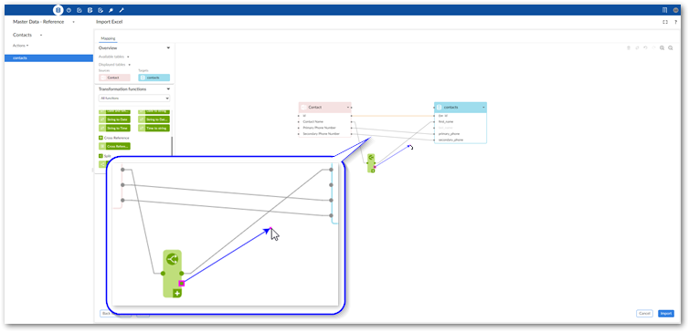

To import data from a CSV file, Excel file, or SQL data source to an individual table:
Initiate the import process:
Navigate to the table you want to use as the target.
Initiate the import process from the table by selecting Actions > Data Exchange (New) and one of the following options: Import CSV, Import Excel, or Import SQL. Administrators must configure the available SQL sources to enable the SQL import option.

Choose the data source:
For CSV and Excel: Browse to select the file containing the source data for the import and optionally the template to use.
For SQL: Use the SQL data source and SQL table dropdown menus to select the source table or view for the import.
Optionally, use the Load template option to select any previously saved template to load its configuration and mapping options. After loading, you still have the ability to make changes to options. Note that changes to certain import options will impact the template's mappings. Depending on the circumstances, the add-on can automatically create default mappings. In other cases you might have to update mappings and transformations manually.
Update format-specific options:
The following image and list highlight some of the options when importing from Excel:

1) Data table starts at and Includes column headers: | Data table starts at: Specifies the location in the spreadsheet where the data table begins. Includes column headers: Use this option to indicate whether the data table contains a header row at the position specified by the Data table starts at property. The add-on will match the text in the first row of each source column with the field labels in the target location. Automatic mappings are generated when the values in the source and target match. When this option is set to No, the add-on maps columns sequentially. It begins by mapping the first column in the source with the first column in the target and so forth until one or both run out of columns. |
2) Advanced options: | Import mode: Specifies how target data is updated. See the tooltip in the UI for descriptions of each mode. NoteDepending on your deployment environment's resources, you might have issues using the Insert only and Delete only modes when importing a large volume of data. If this issue occurs, use any of the other import modes. Case-sensitive label comparison: Determines whether the add-on pays attention to letter case when matching the labels in the source and target. Ignore empty or null values: Determines whether existing records are updated with empty or null values from the imported file. Check empty and null primary keys: Specifies whether all primary keys are matched and validated between source and target. This option is enabled by default. |
The following image and list highlight some of the options when importing from CSV:

1) | Basic options: The data source for this import operation. Includes column headers: Use this option to indicate whether the data table contains a header row at the position specified by the Data table starts at property. The add-on will match the text in the first row of each source column with the field labels in the target location. Automatic mappings are generated when the values in the source and target match. When this option is set to No, the add-on maps columns sequentially. It begins by mapping the first column in the source with the first column in the target and so forth until one or both run out of columns. Field separator: The value used by the source file to denote a field. List separator: The value used by the source file to denote a list. Cell delimiter: The value used by the source file to denote the beginning and end of a cell in the source file. |
2) | Advanced options: Import mode: Specifies how target data is updated. Case-sensitive label comparison: Determines whether the add-on pays attention to letter case when matching the labels in the source and target. Decimal symbol: Specifies how the source file represents the decimal symbol. Ignore empty or null values: Specifies whether to import values that are null or empty. Check empty and null primary keys: Specifies whether all primary keys are matched and validated between source and target. This option is enabled by default. |
The following image and list highlight some of the options when importing from SQL:

Import mode: Specifies how target data is updated. Use the property's tooltip for more information about import modes.
Ignore empty or null values: Specifies whether to import values that are null or empty.
Check empty and null primary keys: Specifies whether all primary keys are matched and validated between source and target. This option is enabled by default.
Optionally, run an import simulation to preview the import result:
Click Simulation at the bottom of the screen. Note, this option is also available from the mapping screen.
Configure the simulation options as desired. Select the '?' icon next to the configuration options and message categories in the report to view their description.
and click Run simulation to begin.
The report shows messages at the error, warning, and information levels. However, please note that the simulation does not take table triggers into account.
Create mappings, or optionally update existing ones:
The following steps provide only high-level mapping instructions. See Mapping interface reference for more detailed information on mapping and transformations.
Select Mapping to enter the mapping screen where you can update the default data mappings or add data transformations. For Excel and CSV import, the add-on automatically creates mappings where the source and target have the same labels. For SQL import, mappings are automatically created when the label and data type match. A mapping identifies which data is extracted from the source and where it is extracted to in the target.
The following image and list describe some features of table and field mapping:

1) | Source (pink) and target (blue) tables: By default, the data source displays on the left and the target on the right. Each table header has a label and uses an icon to show its type and selecting the small arrow collapses and expands the table. The headers also have connection points. Drag this top point to automatically generate mappings between tables. |
2) | Mappings: Each line is a mapping. An orange color and icon indicates there is a warning for a mapping. Select the icon to view the warning. Drag from one field's connection point to another to create a mapping. |
3) | Delete selected: To delete a mapping, select it and then the garbage icon. |
Optionally, add transformation functions:
Transformation functions allow you change the source data to meet technical or business requirements in the target. The add-on ships with several transformation functions that support common business cases. The available API also allows you to implement custom transformation functions. For more details on how to use transformation functions, see Mapping interface reference. For information on the available transformations and their descriptions, see Transformation function reference.
To add a transformation, select and drag the desired transformation function to the mapping screen.

Select and drag fields from the source to the function's input (left) and connect the function's output (right) to target fields.

Double-click the transformation function to edit its parameters. Each function is different, for a complete list, see Transformation function reference.
Optionally, select Save to store your settings as a template for re-use. For more information on using templates, see Using templates.
Click Import to complete the process.
If errors prevent any of the records from importing correctly, the add-on presents you with the option of downloading an Excel file containing the invalid data. Depending on your circumstances, you can correct the data directly in the file and re-import it.